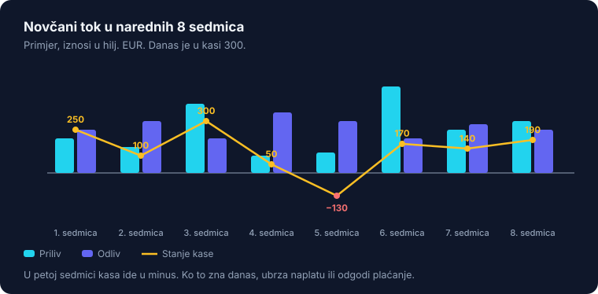
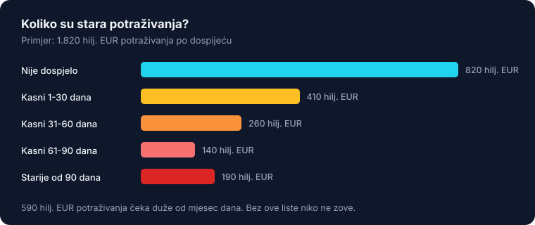

Softver za finansije i knjigovodstvo: zašto je potreban?
Mnogi vlasnici firmi kažu „imamo računovodstvo“, a misle na svog računovođu. Računovođa knjiži fakture, predaje poreske prijave i vodi zakonske knjige. Ali odgovori na pitanja „kome šta plaćamo ove sedmice, od koga šta naplaćujemo, hoćemo li izgurati kraj mjeseca“ nisu kod njega. Ta pitanja čekaju odgovor unutar same firme, najčešće u glavi vlasnika i u jednoj Excel datoteci.

Postoje dva računovodstva
Prvo je službeno računovodstvo koje se vodi prema državi. Gleda unazad, pravila su mu jasna i vodi ga računovođa. Drugo je evidencija koju firma vodi da bi upravljala sobom. To se zove operativno knjigovodstvo ili praćenje finansija. Gleda današnji dan i naredne sedmice.
Za prvo su svi nekako uspostavili red, jer je obavezno. Drugo je u većini firmi razbacano. Salda kupaca i dobavljača su u jednom Excelu, čekovi u rokovniku, promet po računu u elektronskom bankarstvu, a rate kredita u nekoj drugoj datoteci. Jedino mjesto na kojem se sve to vidi zajedno jeste glava vlasnika.
U kasi ima novca, ali šta je za tri sedmice?
Kad se kaže praćenje finansija, u većini firmi to znači da se ujutro pogleda stanje na računu u banci. Ako na računu ima novca, smatra se da je sve u redu. Stanje pokazuje današnji dan. Ne pokazuje ček koji dospijeva naredne sedmice, plate sredinom mjeseca, uplatu PDV-a ni naplatu od kupca koja kasni.

Zbog toga i profitabilne firme zapadaju u nelikvidnost. Prodaja je obavljena, faktura izdata, na papiru je zarađeno. Ali ako naplata stiže za šezdeset dana, a dobavljaču se plaća za trideset, prazninu između treba nečim pokriti. Firma koja to vidi pet sedmica unaprijed mirno razgovara s bankom. Ona koja to primijeti posljednji dan uzima najskuplji kredit koji može naći.
Nenaplaćena potraživanja
U firmama s kojima razgovaramo najčešće zatičemo ovo: zna se ko koliko duguje, ali se ne zna otkad duguje. Na listi je dvadeset kupaca i pored njih iznosi. Kojem je rok prošao, ko ne plaća već tri mjeseca — to se iz liste ne vidi.

Kad niko ne zove zbog dospjelog potraživanja, ni kupac ne žuri. Plati onome ko prvi zatraži novac. Jednostavna lista koja pokazuje starost potraživanja i redovni pozivi jednom sedmično primjetno skraćuju rok naplate.
Sličan gubitak nastaje kod fakturisanja. Posao je isporučen, ali da bi se izdala faktura, neko treba prikupiti otpremnice, pa to ostane za kraj mjeseca. Kako se faktura izdaje kasno, rok plaćanja počinje kasno i novac stiže kasno.
Šta softver za finansije spaja?
Gore navedene dijelove okuplja u jednoj evidenciji. Kad se izda izlazna faktura, sama se upisuje na karticu kupca i u kalendar dospijeća. Kad se unese ulazna faktura, dodaje se na listu plaćanja. Čekovi, mjenice, rate kredita i plate također stoje u istom kalendaru.
Kad su te evidencije na jednom mjestu, tabela novčanog toka za naredne sedmice nastaje sama. Ne morate nikoga pitati „šta plaćamo ovog mjeseca“.
Fakturisanje se veže za prodaju. Isporučena narudžba jednim klikom postaje faktura i šalje se kao e-faktura. Slučaj „posao je završen, a faktura nije izdata“ vidi se na ekranu kao zasebna lista.
Bankovni izvodi se uvoze u sistem i uparuju s evidencijama. Vidi se koja uplata pripada kojoj fakturi i šta su neuparene stavke.
Rashodi se također razvrstavaju. Koliko troši koji odjel, koji projekat, koje vozilo — na kraju mjeseca dobijete u nekoliko klikova. Odavde se nastavlja na temu mjerenja profitabilnosti projekta.
Kako se posao dijeli s računovođom?
Uredna evidencija unutar firme olakšava posao i računovođi. Umjesto da mu na kraju mjeseca pošaljete kesu faktura, prenosite razvrstane i uparene evidencije. Tabelu koju dobijete od njega možete uporediti sa svojom evidencijom.
U većini firmi nije potrebno mijenjati program koji koristi računovođa. Sistem unutar firme izvozi podatke u obliku koji odgovara njegovom programu. Ima i firmi koje žele službeno računovodstvo potpuno preuzeti kod sebe, ali to je zasebna odluka i ne mora biti prvi korak.
Kada postaje potreban?
- Ako broj izdatih i primljenih faktura mjesečno prelazi stotinu.
- Ako prodajete i kupujete s odgodom plaćanja.
- Ako je kalendar čekova, mjenica ili rata kredita u rokovniku jedne osobe.
- Ako vam treba pola sata da saznate ko koliko dana duguje.
- Ako stanje gotovine za naredni mjesec ne možete izraziti brojem.
Odakle početi?
Dvije teme koje najbrže daju rezultat su salda kupaca i dobavljača i praćenje dospijeća. Unesite u sistem salda kupaca i dobavljača, otvorene fakture i njihove rokove. Već i toliko omogućava da vidite listu potraživanja i plaćanja u narednim sedmicama.
Drugi korak je vezivanje fakturisanja za prodaju, a treći uparivanje bankovnih izvoda. Razvrstavanje rashoda i budžet mogu ostati za kraj.
Što se alata tiče, postoje programi koji rade samo fakturisanje i operativno knjigovodstvo, ERP sistemi koji rade zajedno s prodajom i zalihama i rješenja između to dvoje. Ako se prodaja, zalihe i nabavka vode u drugom sistemu, finansije moraju s njima razmjenjivati podatke. U suprotnom se svaka faktura unosi dvaput. Mi pri izboru prvo gledamo tu vezu.
Česta pitanja
Imamo računovođu — treba li nam i ovo?
To su dva različita posla. Računovođa vodi zakonsku evidenciju proteklog perioda. Praćenje finansija pokazuje današnje stanje potraživanja, obaveza i gotovine i potrebno je za svakodnevne odluke firme.
Koristimo program za fakturisanje i knjigovodstvo — zar to nije dovoljno?
Za praćenje kupaca, dobavljača i faktura može biti dovoljno. Ono što obično nedostaje jeste veza s prodajom, zalihama i projektima. Ako iste podatke unosite u dva sistema ili tabelu novčanog toka i dalje pravite u Excelu, vrijeme je da pogledate korak dalje.
Treba li prenositi stare evidencije?
Ne sve. Dovoljne su otvorene fakture, trenutna salda kupaca i dobavljača te čekovi i mjenice koji još nisu dospjeli. Zatvorene stare evidencije mogu ostati gdje jesu.
Naše povezane usluge: ERP rješenja za mala i srednja preduzeća, konsalting za digitalnu transformaciju.
Koliko vas godišnje košta praćenje posla u tabelama?
Izračunajte godišnji trošak ponovnog unosa, ručno pravljenih izvještaja i grešaka zbog tabela.
Otvori kalkulatorNapravimo zajedno vašu tabelu novčanog toka
Pogledajmo zajedno prilive i odlive u narednih osam sedmica.
Razgovarajmo o vašem projektu